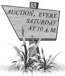
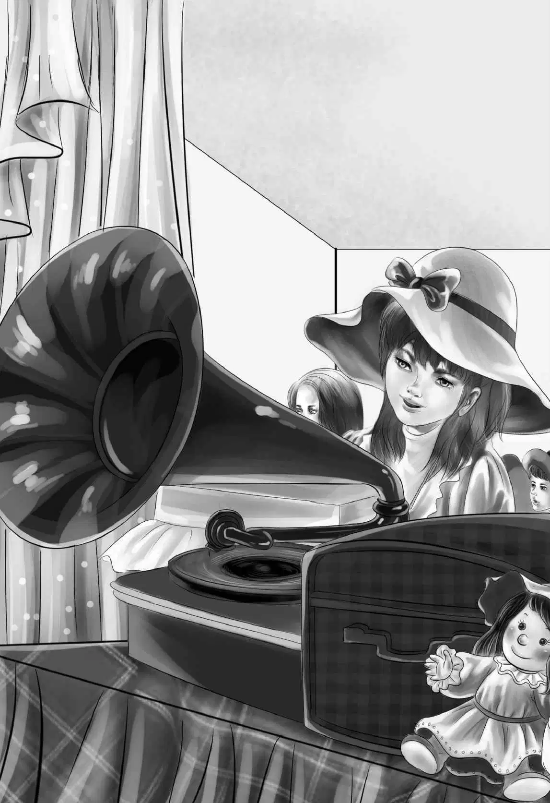
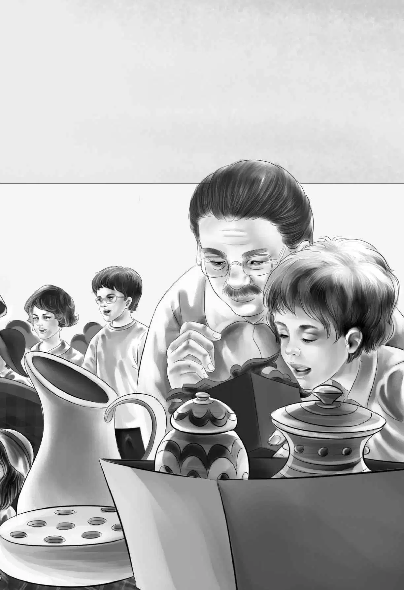

The next morning Benny climbed up to the roof of the houseboat. He called down to Jessie， “Look here and see if I have the new name right.”
“Oh， this is my day！” Jessie said， as she read The Jessie Alden. “I like having a houseboat named for me.
Henry asked， “Do you need to buy food today？Benny and I can watch for a place to land.”
“No，” said Jessie， shaking her head. “I have plenty of food for another day. We can just enjoy houseboating.” She looked up at the trees. “See， the branches almost meet over our heads. Isn’t it beautiful？”
The Aldens sat in chairs on the deck and watched the river grow wider and then narrower. Suddenly Jessie said， “Look， Grandfather！See that sign on the bank of the river？It says there’s an auction！”
The sign did indeed say：

“Oh， you love auctions， Grandfather！” said Violet. “Let’s stop.”
Grandfather said， “You’re right， Violet. I do love auctions. But do you all want to go？”
Benny looked at his grandfather and said， “I never went to an auction in my whole life！”
“Neither did I，” said Violet.
Mr. Alden said， “I can’t believe it！I know it is so， but I can’t understand why I never took you to an auction.”
“You took me once，” said Henry. “And Jessie went， too. But that was years ago. Benny and Violet would love it， that’s for sure. It’s exciting， Ben.”
Jessie said， “Some auctions are better than others. This auction must have some good things， if they have one every week.”
Henry went on， “The auctioneer is very funny sometimes. He tries to keep everybody good-natured. You see， Ben， people call out what they will pay for a clock or a rug. The one who pays the most gets it.”
“That would be fun，” said Benny. “Let’s go.”
“We’re always saying ‘Let’s go！’” said Jessie， laughing.
Henry said， “Just give me time to lock the doors and shut the windows.” They never forgot.
Henry and Benny poled the boat to the dock and anchored it and tied it.
When the Aldens reached the main street， they saw crowds of people going into a low， brown building with an enormous door. The door was as wide as the front of the building. The Aldens went along with the crowd.
Inside， they saw rows of folding chairs on the wooden floor. There was a little platform in the front， and on it were all sorts of things to sell. Furniture of all kinds stood on the platform. There were radios， TV sets， and bicycles. There were silver teapots， pictures of all sizes， and even baseball gloves. On a table was a box of old clothes and boxes of tin dishes and china and glass. It was fascinating.
Grandfather had seen many auctions. He always went up to the front seat. But this time， nobody seemed to be sitting down. All the people were up at the front of the hall， pushing and looking over the things to be sold. Some of the people had come to buy a book or a clock or a table for themselves. But dealers were there， too. They were men who bought things at an auction to sell again at a higher price.
Dealers often bought furniture or dishes for their customers who had ordered them.
“Let’s look around，” said Benny. “It isn’t ten o’clock yet.”
“Then start here at the left end of the platform，” said Mr. Alden， “and work toward the right. Then we’ll see everything.”
Grandfather looked at a few things. “There are some expensive things here，” he said. “I wonder if there is a policeman around to see that nothing is stolen？”
“There’s one over there，” said Henry， pointing to a man standing in a corner. “But there are so many people here he can’t watch everybody.”
The crowd was good-natured. A big man laughed and said to Henry， “Excuse me for pushing. I can’t help it because someone is pushing me.”
“That’s all right，” said Henry. “I’m pushing， too！”


There were children in the crowd. The boys were looking at the baseball suits and bats. Girls were looking at sweaters.
“That is a beautiful mirror，” said Mr. Alden to Jessie. “And that desk is a very fine one， but—”
Someone pushed between Jessie and Grandfather， and Mr. Alden could not finish his sentence. When Jessie could get near him again， she asked， “What were you going to say， Grandfather？”
“I was going to say that the little vase way back on the desk is worth more than the desk.”
Again Jessie was pushed a little way from Mr. Alden， but she called to him， “Let’s stay right through this auction， Grandfather！We can eat lunch afterward. I’m sure we can find a restaurant.”
“Just as you like，” Mr. Alden called back.
Everyone nearby could hear all this. A lady turned to Mr. Alden and said， “There is a fine place right on Main Street called the Elm Tree Inn. There is a large elm tree right by the doorstep.”
“Thank you！” said Mr. Alden. “We’ll certainly go there.”
Just then a bell rang. Everyone began to rush for seats. The Aldens found seats in the front row. Henry sat beside a man in a gray suit.
The auctioneer began. He held up a small painting.
“What am I offered？” he called out. “This is a hand-painted picture of the river.”
A very young voice answered， “One dollar！”
Grandfather looked back to see who was bidding. It was a young boy， younger than Benny. Mr. Alden whispered to Henry， “It’s a young boy in a red cap. He’s very young to bid at an auction. He seems to be all alone.”
The man in the gray suit called out， “Five dollars！”
“Six dollars！” called a woman’s voice.
“Seven dollars！” said the man in the gray suit.
Grandfather whispered again to Henry， “I think that man beside you is a dealer. He knows what things are worth.”
“Ten dollars！” called the woman.
The dealer said to Henry， “Oh， let her have it！It isn’t worth more than ten dollars. They always start with the cheap things. I’m waiting for that little vase. It is out of sight now on the old desk.”
“Yes， I saw that vase，” said Henry.
The woman came forward and took the painting and gave the man ten dollars.
Then the auctioneer held up a box of old clothes. He took a boy’s shirt off the top and held it up. He said， “There are five shirts in this box， a boy’s jacket， a man’s heavy overcoat， and five women’s dresses. What am I offered？”
“One dollar！” called the boy in the red cap.
“Two dollars！” called a man.
“Three dollars！” called the boy.
“Four dollars！” shouted another man.
“Five dollars！” called the boy.
There was no answer. Nobody would bid higher than that.
“Going， going， gone！” said the auctioneer. “To the boy in the red cap！”
The boy came forward and took the box. He gave the man five one-dollar bills. Everyone smiled at the boy as he went out with the box of old clothes. He looked very much pleased with the things he had bought.
Benny whispered to Henry， “I saw that boy in the red cap looking over that box. I guess he is poor.”
“Well， he had five dollars， Ben，” said Henry. “And he got what he wanted. He’s gone， anyway.”
Benny half stood up. He looked through the window after the boy. He was surprised when he saw the boy begin to run. The boy was soon out of sight.
“That’s funny，” thought Benny. “I wonder why he was in such a hurry. Maybe he wants to show the things to his mother.”
At last the cheaper things were sold. The expensive things would be put up for sale now. The crowd began to talk and buzz. They made a great noise in their excitement.
“Quiet！” said the auctioneer.
First the dealer in the gray suit bought an old table for $500. He laughed as he paid for it. He knew he could sell it for more. But when he came back to his seat， he said to Henry， “I’m really waiting for that vase.”
At last the auctioneer came to the vase. He said to the crowd， “The vase I am going to sell next is the best piece here. It is very old and made of gold. You see！A rhyme！Old and gold.”
The people laughed.
Then the auctioneer went on， “This vase has rubies and emeralds set in the gold. It came from Egypt. I am talking about this small vase on the desk.”
He turned to take the vase off the desk， but the vase was not there！
The dealer whispered， “Stolen！I bet it was stolen！”
It seemed that the dealer was right. The vase could not be found. Again the crowd began to buzz.
“I stood right here，” said the policeman. “But I didn’t see anyone take it.”
“Well， somebody took it，” said the auctioneer.
“Too bad，” said Grandfather. “Let’s go. This auction is no fun anymore. No one likes to think there is a thief in the room.”
“Yes， you can go，” said the policeman to Grandfather. “I’m sure you didn’t take the vase.”
“I should say not，” said Grandfather. “I know the police will take care of this.”
Indeed， as the Aldens went out of the building， they met two more policemen coming in. Henry thought， “Someone must have telephoned the police station.”
As he passed a policeman on the steps， Benny said to him， “I hope you will find that vase.”
“Oh， we’ll find it，” the policeman answered. “There are strange things going on around here. This is only one of them.”
The other policeman added， “Right up and down our own river！It always has been so peaceful here. Nothing like this ever happened before.”
The Aldens went along the street looking for the Elm Tree Inn. It was easy to find， for they soon saw the big tree.
Violet said， “I don’t feel very hungry. But we’d better eat just the same， I suppose.”
Jessie smiled and said， “We’ve got a chance now to eat without cooking a meal or washing the dishes. We’d better eat whether we’re hungry or not.”
“Well， I’m hungry，” said Benny.
“So am I， mate，” said Henry. “It will be no trouble at all for me.”
Benny held the door of the Elm Tree Inn open while the others went in. Just as he was going to follow them he looked toward the street. He was in time to see a big black car swing out to pass a small truck. The truck driver called out， “Hey！Look where you’re going！”
Benny had a fine chance to see the driver of the black car as it whizzed by. He thought to himself， “That is the very man I saw in the restaurant！He’s the one I didn’t like. He’s the one who said， ‘What do you mean—find out？Nobody has found out yet.’ ”
The driver’s left hand was on the small open window of the black car. He drove with his right hand. Benny saw that the man wore a big square black ring. Then the car was around the corner and out of sight. Benny went into the inn.
The family stayed a long time at the Elm Tree Inn. The restaurant was crowded with people. The waitress could not serve them for a long time. But as they waited for their lunch， Benny told them in a low voice about the man in the car.
Then Jessie said， “Those men don’t seem to do anything wrong. They just drive too fast.”
“Well， they almost ran into our car，” said Henry. “I won’t forget that in a hurry.”
By the time the food was served， every Alden was hungry. Even Violet ate an excellent meal.
After lunch， Violet said， “Let’s go， Grandfather. I’m tired.”
Everyone agreed. They all wanted to get back to the houseboat.
As the family walked along， Henry said， “I wonder what those policemen meant about strange things. Maybe that black car has something to do with all the trouble. It certainly looks strange in these small towns. It goes too fast.”
Violet said， “Maybe the police have seen those two men who almost ran into us.”
“I don’t like them，” said Benny. “I didn’t like them when I saw them in the restaurant.”
The Aldens walked down the path. They found the houseboat still safely anchored at the dock. Benny untied the rope， and Henry unlocked the door. They all went into the cabin.
Everyone began to sniff.
“Smoke！” said Benny. “I smell smoke！Where’s that sandbox？I want that sand ready if there’s a fire.”
“It’s cigarette smoke，” said Henry. “No fire.”
Grandfather looked very sober. He said， “Henry， unlock the back door， too. You can use the same key.”
Grandfather looked at both doors. Then he tried the windows. They were all locked.
Jessie looked around the galley. Not a dish had been moved. Violet looked at the beds and the curtains.
Henry went out and checked the motor. It seemed to be all right.
They looked in the icebox and even in the water tank. They could not find a thing.
“I don’t like it，” said Grandfather. “Both doors were locked， and there isn’t a mark on the keyholes.”
After a while they all agreed on one thing—someone had been in the cabin， smoking a cigarette.
Benny said， “You know， this was a fine time for someone to get into this houseboat. Everybody at that auction knew we were going to eat lunch on land. Remember， Jessie， how you called to Grandfather？”
Jessie nodded. “And a stranger even said， ‘I know a place where you can eat—the Elm Tree Inn.’ Oh， yes， I guess we told everybody in that town that we wouldn’t be home for a while.”
Benny went out on the front deck and sat down to think. He was thinking about the boy in the red cap. It was strange how he ran away from the auction.
“Something funny here，” Benny said to himself. “But that boy is too young to be smoking cigarettes. Besides， he seemed like such a nice boy. I liked him the minute I saw him looking over the box of old clothes.”
Everyone came out on the front deck and sat down.
Henry said， “Whoever was in our houseboat wasn’t very smart. Anyone would know we would smell smoke. How do you think the person got in， Grandfather？”
Mr. Alden answered， “Well， I think someone has a key.”
Benny was safely in bed that night. Suddenly he felt that something was missing. Then he knew what it was. He could not hear the clock tick！He looked out in the dark and found the spot on the wall where the clock hung. The clock was gone！
“Now I know someone has been here，” Benny thought. “I know people often steal clocks and radios because they can sell them. But I wouldn’t think anyone would come aboard just for a little old clock.”
Benny did not want to wake everybody up to tell them， so he turned over and went to sleep.